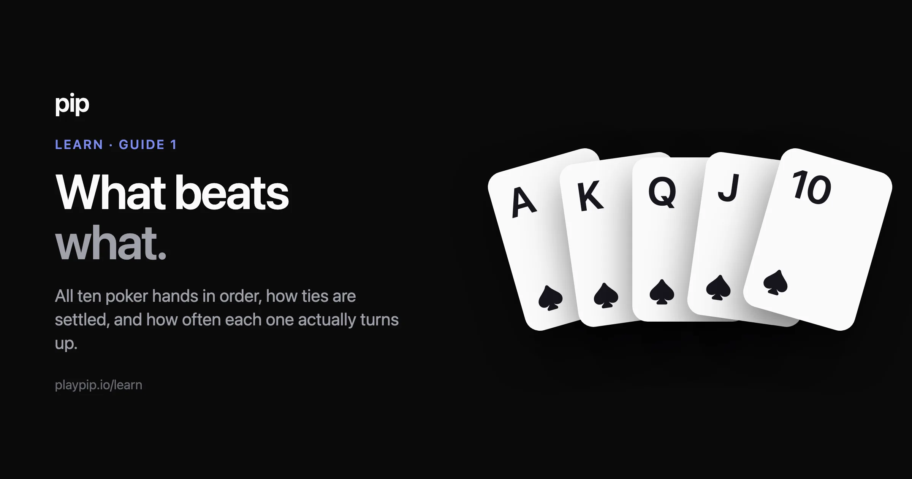
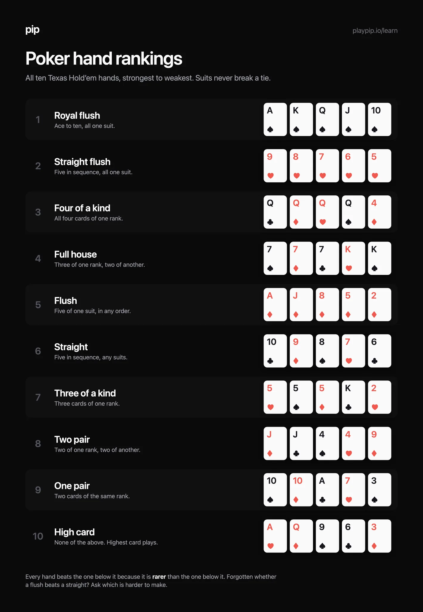

Poker hand rankings

There are ten poker hands. Strongest to weakest: royal flush, straight flush, four of a kind, full house, flush, straight, three of a kind, two pair, one pair, high card. In Texas Hold’em you make the best five-card hand you can from your two cards and the five on the table, and suits never break a tie.
That’s the answer. The rest of this page is the detail you need the first few times, and one table worth keeping.
The ten hands, strongest first
| # | Hand | What it is | Example |
|---|---|---|---|
| 1 | Royal flush | Ace to ten, all one suit. The best hand in poker, and it’s just the top straight flush with a nicer name. | A♠ K♠ Q♠ J♠ 10♠ |
| 2 | Straight flush | Five cards in sequence, all one suit. | 9♥ 8♥ 7♥ 6♥ 5♥ |
| 3 | Four of a kind | All four cards of one rank. | Q♣ Q♦ Q♥ Q♠ 4♦ |
| 4 | Full house | Three of one rank, two of another. | 7♠ 7♦ 7♣ K♥ K♠ |
| 5 | Flush | Five cards of one suit, in any order. | A♦ J♦ 8♦ 5♦ 2♦ |
| 6 | Straight | Five cards in sequence, any suits. | 10♣ 9♦ 8♠ 7♥ 6♣ |
| 7 | Three of a kind | Three cards of one rank. | 5♥ 5♠ 5♦ K♣ 2♥ |
| 8 | Two pair | Two cards of one rank, two of another. | J♦ J♣ 4♠ 4♥ 9♦ |
| 9 | One pair | Two cards of the same rank. | 10♠ 10♦ A♣ 7♥ 3♠ |
| 10 | High card | None of the above. Your highest card plays. | A♥ Q♦ 9♠ 6♣ 3♦ |

The order is not arbitrary. Every hand beats the one below it because it is rarer than the one below it, counted over five cards, and on five cards that holds exactly, all the way down the list. If you ever forget whether a flush beats a straight, the question you’re really asking is which one is harder to make. It’s the flush.
Deal seven cards instead of five, which is what Hold’em does, and the rule breaks in exactly one place. It is at the bottom of the list, it is the most useful thing on this page, and it has its own paragraph further down.
How ties are settled
Two players can easily make “the same” hand. Three rules settle almost every case.
Rank first. A pair of kings beats a pair of nines. Three queens beat three sevens. Compare the part of the hand that names it before anything else.
Then kickers. If the named part ties, the remaining cards decide, highest first. A-K against A-Q, on a board of A-8-5-3-2, is a pair of aces each. The king plays and wins. Kickers are where most beginner pots are quietly lost, and they’re the main reason ace-rag is a worse hand than it looks.
Suits never break a tie. There is no suit order in Texas Hold’em. If two hands are genuinely identical, the pot is split. This surprises people who’ve played other card games, so it’s worth saying flatly: a heart flush and a spade flush of the same ranks are the same hand.
Two things that catch people out
The ace plays high and low, but never round the corner. A-K-Q-J-10 is the highest straight. A-2-3-4-5 is the lowest, and it’s the only straight where the ace counts as a one. Q-K-A-2-3 is not a straight at all. Nothing wraps.
A straight, and the highest one there is. Here the ace is playing high.
Your best five cards might not include your cards. You make the best five from the seven available, and sometimes all five of those are on the table. If the board is A-K-Q-J-10 with no flush possible, everyone still in the hand has the same straight and the pot is split, no matter what they’re holding. Beginners often fold in that spot thinking they’ve lost. The quieter version is three pair: three pairs are on show, two of them play, and the one you were dealt is the one left out a quarter of the time.
Who wins?
1 of 3Same five cards on the table, two different hands. Have a guess.
The board
Those three are written out and they stay put. If you want them dealt fresh instead, the which hand wins drill in the app deals a new pair of hands every time and settles each one the same way.
How often each hand actually turns up
Here is the part most rankings pages leave out, and it’s the part that changes how you play.
| Hand | Chance of making it by the river |
|---|---|
| Royal flush | 0.0032% |
| Straight flush | 0.028% |
| Four of a kind | 0.17% |
| Full house | 2.6% |
| Flush | 3.0% |
| Straight | 4.6% |
| Three of a kind | 4.8% |
| Two pair | 23.5% |
| One pair | 43.8% |
| High card | 17.4% |
Read that honestly: these are the odds for seven random cards, not for hands that reach a showdown. Real play is not random, because people fold. But the shape of the table is the useful bit, and the shape says three things.
A single pair is a real hand. Nearly half of all seven-card holdings end up as exactly one pair, and pairs win an enormous number of pots. New players routinely fold winners because a pair “doesn’t feel like enough”. It usually is.
One pair is commoner than no pair at all, which is the one place the ranking’s own logic turns over. One pair beats high card because on five cards it is rarer. Deal seven and it stops being rarer, because missing every pair across seven cards is harder than hitting one: high card arrives 17.4% of the time and one pair 43.8%. The order above is not wrong, it is settled on five cards and this table is seven. What it means at a table is that having nothing is rarer, and worse, than a rankings chart makes it look.
The big hands are rare enough that waiting for them is not a strategy. A full house or better turns up under three times in a hundred. If your plan is to fold until you’re dealt something spectacular, the blinds will take your chips long before the cards do.
The folk names
Poker has an old habit of naming starting hands. Pocket aces are Pocket Rockets. Ace-king is Big Slick. Two eights are Snowmen. Seven-two offsuit, the worst hand in Hold’em, is The Hammer.
None of this affects what beats what. It’s just the culture the game carries around with it, and it’s genuinely useful for talking about hands out loud. Pip whispers the name when you’re dealt one, which is a nicer way to learn them than a list.
Reading a rankings table gets you to the point where you recognise the hands. Playing gets you to the point where you see them coming. That second part only happens at a table.
You can play Texas Hold’em on Pip right now, in the browser, against opponents that actually play. Nothing to install, free to play, and the chips are never for sale. The hand strength is shown as you go, so the rankings stop being something you look up and start being something you know.
A free account keeps your Roll on every device, and you never need one to play.